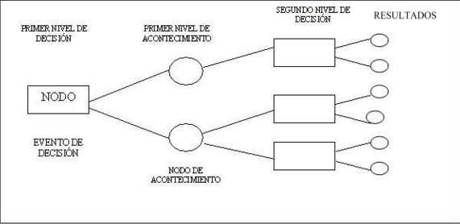

Los árboles de decisión son diagramas secuenciales que nos muestran los posibles resultados ante una problemática presentada. Ayudan a las empresas a determinar cuáles son sus opciones al mostrarles las distintas decisiones y sus resultados. La opción que evita una pérdida o produce un beneficio extra tiene un valor.
Su objetivo es emplear distintos panoramas y poder seleccionar uno bajo números y propuestas objetivas, evitando la combinación de emociones.
Su metodología se basa en separar estimados, desde consecuencias hasta costos y las empresas suelen utilizar este diagrama para determinar políticas empresariales o como herramienta para la solución de problemas por parte de los empleados.
La toma de decisiones básicamente es una resolución de problemasEntradas : Pueden ser un objeto o una situación descrita por medio de un conjunto de atributos.
Salidas : Una(s) respuesta(s) la cual en últimas es una decisión que es tomada de las entradas.
Ventajas
Desventajas
Un árbol de decisión lleva a cabo un test a medida que este se recorre hacia las hojas para alcanzar así una decisión.
El árbol de decisión suele contener nodos internos, nodos de probabilidad, nodos hojas y arcos.
Se llama árbol de decisión porque se busca generar cuáles son las alternativas (sean buenas o malas) de cada factor a evaluar.
Una vez identificada la problemática, se comienza a enumerar todos los factores que la componen.
Es importante comenzar a limitar los criterios de decisión, es por ello que de la lista anterior se debe separar cuáles son los factores que son primordiales para la empresa.
Se trata de buscar y enumerar (de los criterios anteriores) cuales son más importantes, para ello es recomendable enumerar.
Cada uno de estos factores debe contar con fortalezas o debilidades, se debe comenzar la ramificación apartando tres o cuatro alternativas para cada criterio. Lo que se busca es generar supuestos de manera objetiva, si de los criterios salieron cuatro ramificaciones y de esas cuatro salieron 12 más, esto ayudará a profundizar en lo más conveniente.
Se analiza cuál es la opción más conveniente de acuerdo al árbol de decisiones, siempre se toma en cuenta la importancia de los criterios y cada una de sus alternativas.
Si bien la implementación no es como tal parte de la evaluación de las alternativas por medio del árbol de decisiones, al realizarlo es importante cuidar que se siga paso a paso cada detalle, una pequeña falla podría dar resultados no deseados y esto perjudicaría todo el proceso de selección.
Siempre es bueno saber qué se hizo bien y qué se hizo mal, analizar cada paso en la evaluación de alternativas ayudará a mejorar tomas de decisiones a futuro.
Los arboles de decisión son generalmente de esta índole, en la cual la búsqueda partirá principalmente de 2 alternativas, aunque eso no indique que no existan de 3 o más.
Este proceso una aplicación de si mismo. Tomemos por ejemplo el juego de gato, y consideremos una función “evalúa” que acepta una función del tablero y desglosara posibles movimientos.
Este proceso es más preciso que el hombre para poder desarrollar un diagnostico con respecto a algo, ya que el hombre puede dejar pasar sin querer detalle, en cambio la maquina mediante un sistema experto con un árbol de decisión puede dar un resultado exacto.